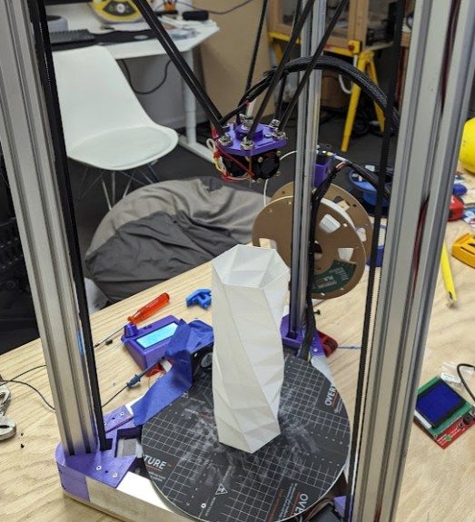
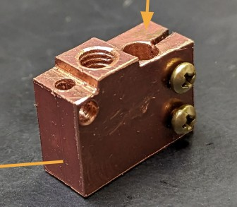
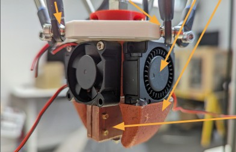
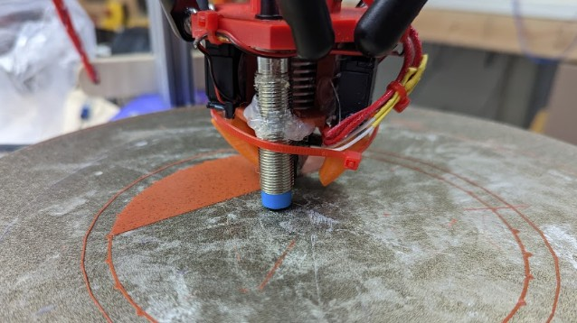
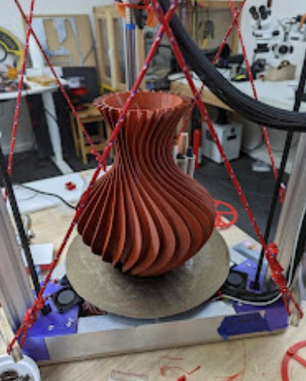
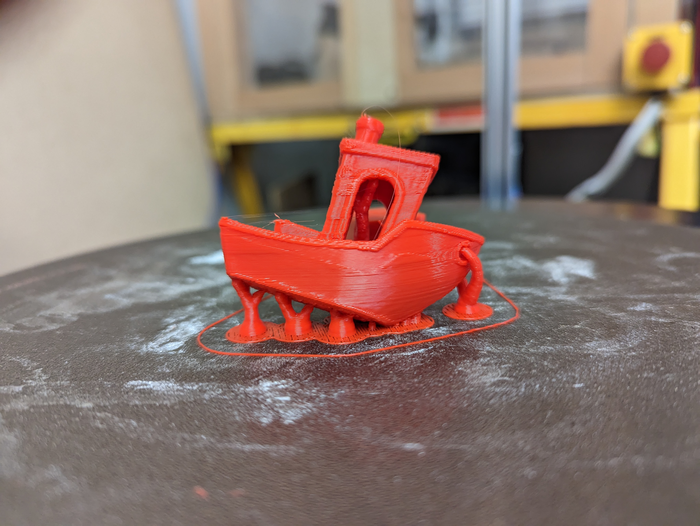

01 — Problem
Delta printers are fast — but finicky
Delta printers can move faster than Cartesian printers because the print head is lighter. But they have a fundamental challenge: everything depends on tolerance stack. Even a 0.01" arm inconsistency translates directly into a non-flat print surface.
Commercially available deltas also compromise on flow rate (short melt zones) and joint precision (magnetic connections that disconnect under acceleration). I wanted to build one that solved all three.
"Magnetic joints were prone to disconnect under high acceleration. Arms were ±1/16" — terrible for high precision work."


02 — Process
Five revisions of systematic improvement
Initial build — proof of motion
First functional delta with magnetic joints and 3D-printed arms. Achieved movement but revealed magnetic disconnects, conical bed-level error, no part cooling, and poor first-layer adhesion.
Ball joint arms + copper heater block
Replaced magnets with ball joint clevises. Hand-machined a copper heater block with 2× longer melt zone for higher flow. Added dual fan part cooling.
Movement system overhaul
Discovered a "virtual uneven four-bar" caused by 0.01" print orientation variance. Switched to commercial cup-ball-joint arms. Spaced arm mounts 2× farther apart to geometrically reduce the conical effect.
Software & geometry tuning
Manually probed 20+ bed points and iterated a "reality tune" — a software geometry description accounting for real-world deviations from CAD. Achieved consistent first layers.



03 — Solution
A machine designed around its own weaknesses
The final printer uses commercial cup-ball-joint carbon fiber arms (consistent to <0.005"), a hand-machined copper heater block with a 2× extended melt zone, dual-fan radial part cooling, and a magnetic spring-steel bed for easy part removal.
The custom heater block alone enables 2–3× higher volumetric flow than stock hotends — the primary limiter of print speed at high acceleration.

04 — Result
Faster than commercial. Built from scratch.
Every revision taught something distinct — kinematic geometry, tolerance stack, firmware calibration, thermal design. The copper heater block design directly influenced how I think about heat transfer constraints at Brewbird.
"The goal: finish the benchy. Quality is irrelevant. Just go fast."
Speed benchy attempt — printer running at maximum input-shaper-tuned acceleration with no quality constraints. The objective is completion time only.

05 — Key Learning
Physical iteration reveals what CAD can't
Every revision exposed a failure mode invisible in the model — magnetic joints disconnecting under acceleration, conical bed error from a "virtual uneven four-bar," first-layer inconsistency from residual geometry error. None appeared in simulation. They required building, measuring, and rebuilding.
The most transferable insight was the "reality tune" principle: explicitly characterizing the gap between what the model says and what the machine actually does, then encoding that gap into the software geometry description. Every precision system I've designed since has needed some version of this step.